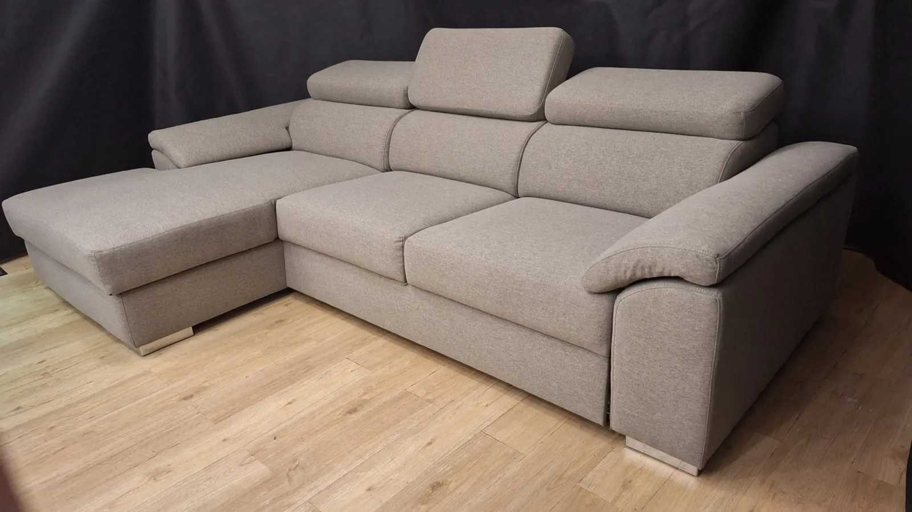
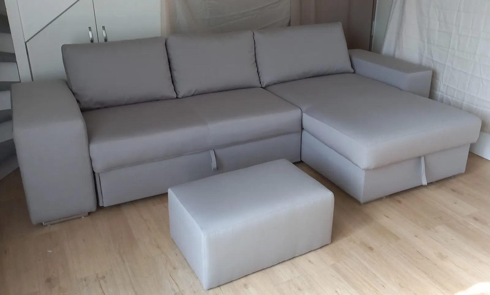
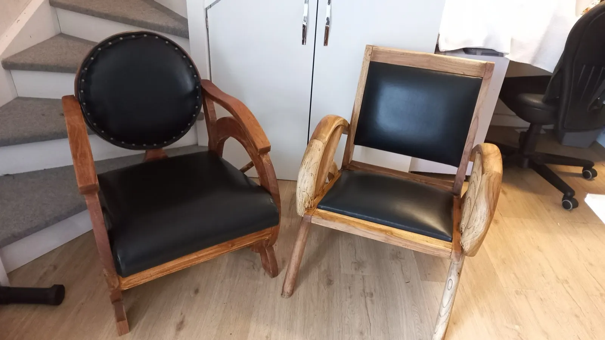
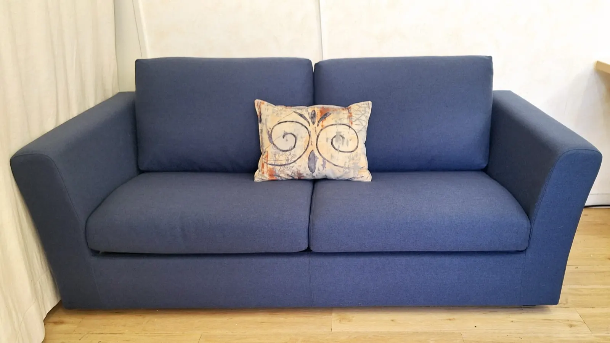
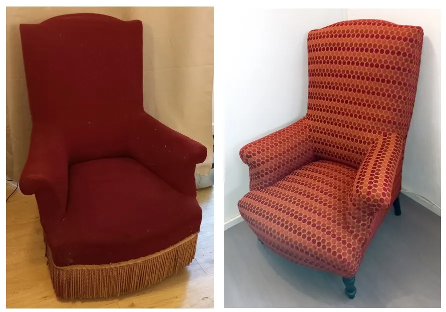
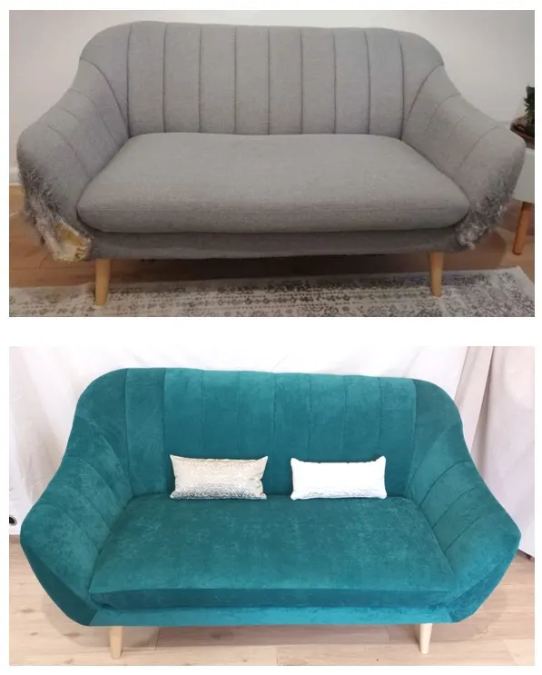
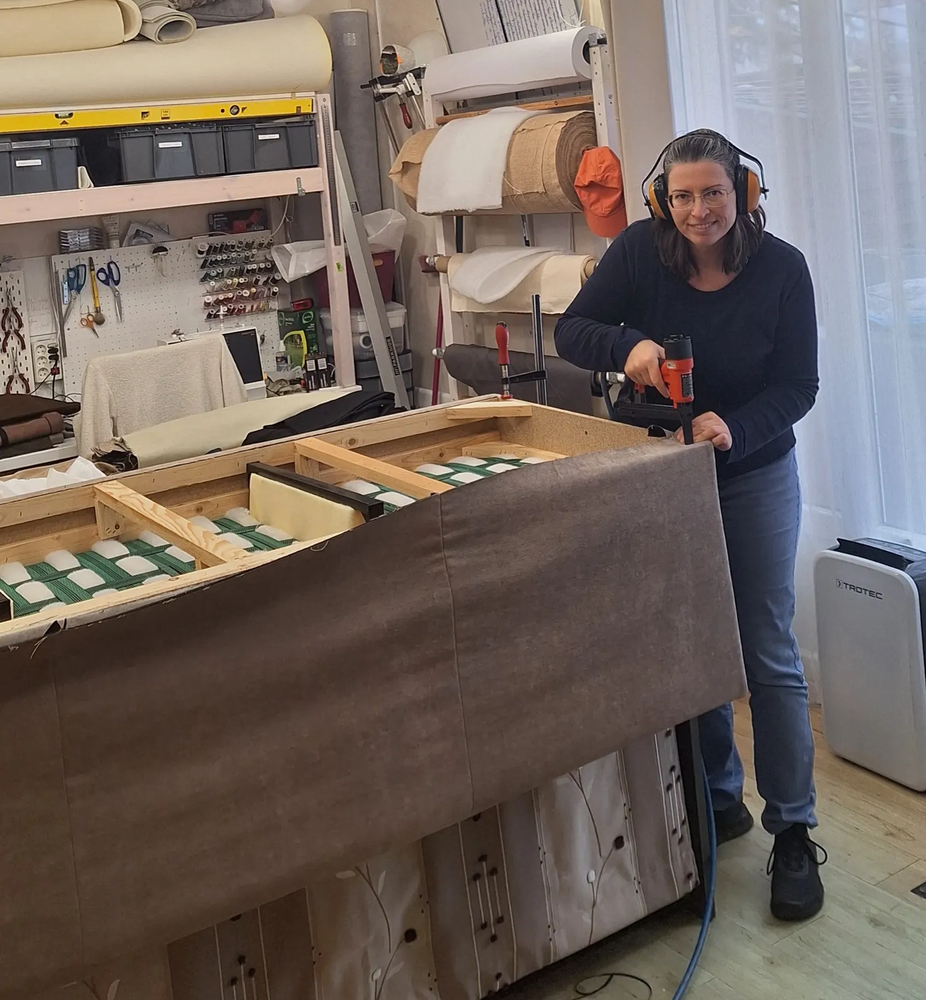

Atelier Re Confort, à Poitiers
Votre fauteuil a besoin de soin ?
Fauteuil, canapé, chaise, tête de lit : Gladys Pichereau restaure tous les sièges recouverts de tissu ou de cuir, change la garniture, traditionnelle ou en mousse, et leur choisit avec vous un nouveau tissu.
- Poitiers33 rue de la Foucaudière
- Tissu ou cuirsièges d'époque, de style ou contemporains
- Garnituretraditionnelle, avec ou sans ressorts, ou mousse
- Qualifiée en 2024qualification en mars, atelier lancé en octobre
- Une quinzaine d'annéesde rideaux, coussins et housses
Abîmé, usé, cassé, défraîchi. Un tissu déchiré, sale, décoloré par le soleil, ou qui ne vous plaît plus. Une garniture qui s'affaisse et n'est plus confortable.Vous êtes au bon endroit.
Chaque meuble a sa solution : une nouvelle garniture, un nouveau tissu, une réparation de la structure, ou tout cela à la fois.

Ce que l'atelier fait pour vos sièges.
Du fauteuil d'époque au canapé contemporain, avec la garniture et la finition qui en feront une pièce maîtresse de votre intérieur.


-
Restauration de vos sièges d'époque ou de style
Fauteuil, canapé, chaise, tête de lit : on choisit ensemble la garniture, traditionnelle (avec ou sans ressorts, crin) ou contemporaine (mousse), et le tissu qui lui va.
-
Sièges et meubles contemporains, en tissu ou en cuir
Chaises de salle à manger en fin de vie, canapé à rhabiller après les assauts du chat ou des enfants, simili cuir de tête de lit qui s'effrite : à chaque besoin sa solution.
-
Réparation de la structure
Un accident a abîmé la structure de votre canapé, votre chaise a perdu sa stabilité ? Une réparation est sûrement possible.
-
Confection sur mesure
Coussins, housses de coussins et de sièges, rideaux. Une envie hors norme, une caravane ou un camping-car à rafraîchir ?
Parlons-en, j'adore les défis ! -
Reconditionnement et vente
Des sièges malmenés par la vie, remis en état puis proposés à la vente pour s'installer dans un nouvel intérieur.
Avant, après : la même pièce, une autre vie.
Un fauteuil anglais à la frange fatiguée, un canapé griffé par le chat : chacun a retrouvé sa garniture ou un velours neuf.
Réparer, réemployer, réutiliser : offrir une nouvelle vie aux sièges, c'est aussi réduire les déchets.

Fauteuil de style anglais, garniture traditionnelle, recouvert de velours

Canapé griffé par un chat, recouvert de velours

Gladys Pichereau, tapissière.
Je restaure tous types de mobilier recouverts de tissu, et je confectionne rideaux, coussins et housses depuis une quinzaine d'années.
Le métier de tapissier s'est imposé quand le besoin de me reconvertir s'est fait sentir. J'ai obtenu la qualification en mars 2024, puis créé mon entreprise en octobre 2024. Je serai ravie de vous rencontrer pour étudier vos besoins et donner vie à vos envies.
Votre canapé a besoin d'un tissu neuf après les assauts de votre chat ? À chaque besoin sa solution.
Lire la présentationParlons de votre meuble.
Un appel ou un e-mail suffit pour décrire votre fauteuil, votre canapé ou votre projet de confection.
- Atelier
- 33 rue de la Foucaudière
86000 Poitiers - Téléphone
- 06 76 44 47 52